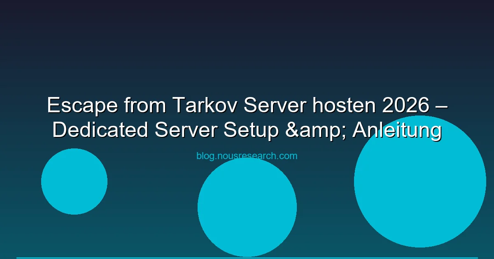

Escape from Tarkov gehört zu den anspruchsvollsten Shootern am Markt. Das Hardcore-MMO-Shooter-Game von Battlestate Games überzeugt durch hartcore Realismus, Ballistik und Loot-Systeme. Doch wer Tarkov in einer Gruppe spielen will, stellt sich schnell die Frage: Kann man einen eigenen Tarkov Server hosten? Wir erklären die Realität hinter Tarkovs Server-Struktur und welche Optionen du hast.
Ehrliche Info: Escape from Tarkov hat KEINEN offiziellen Dedicated-Server-Support für Spieler. Alle offiziellen Server werden von Battlestate Games betrieben. Diese Option ist nur Verified Communities/Clans verfügbar — mit strengen Anforderungen.
Tarkov nutzt ein Server-Model, bei dem Battlestate Games die alleinige Kontrolle über die Server hat. Anders als bei Spielen wie PUBG oder Rust kannst du keinen einfach eigenen Server mieten und starten. Die Gründe:
Seit 2024 bietet Battlestate Games Verified Community Server an. Das sind offizielle Dedicated Server, die von der Community verwaltet werden können. Allerdings nur unter stricten Bedingungen:
Die Verified Community Server haben dieselbe Infrastruktur wie offizielle Server, erlauben aber eigene Events, Turniere und Gruppen-Sessions.
Tarkov Arena (das separate Arena-Spielmodul) bietet mehr Flexibilität. Hier sind Community-Server einzurichten:
Für die meisten Gruppen lohnt sich der Aufwand für einen eigenen Server nicht. Stattdessen:
In Tarkov kannst du mit bis zu 5 Spielern gleichzeitig in einen Raid. Die Gruppen-Matchmaking-Queue wählt dir automatisch einen Server mit optimaler Latenz. Tipps für bessere Verbindungen:
| Kostenplatz | Monatliche Kosten | Details |
|---|---|---|
| Dedicated Server (OVH/SoYouStart) | 40-80 € | Ab 6 Kerne, 32 GB RAM |
| DDoS-Schutz (-zusätzlich) | 15-30 € | OVH std., Path.net für mehr |
| Serververwaltung (MTTR) | 100-300 € | Wenn nicht selbst administriert |
| Zertifizierungsgebühr (BSG) | 0 € | Kostenlos, aber Aufnahmeprüfung |
Fazit: Ohne Verified Community Status ist das Hosten eines Tarkov-Servers nicht möglich. Für normale Gruppen reicht das offizielle Gruppen-Matchmaking komplett aus.
Nur als Verified Community nach Verifizierung durch Battlestate Games. Ohne Verifizierung ist kein eigener Tarkov-Server möglich.
Über das Battlestate Games Developer Portal auf ihr Website. Du musst Informationen über deine Community, Mitgliederzahlen und Server-Management-Pläne einreichen.
Die Gruppen-Funktion im Spiel erlaubt Squads mit bis zu 5 Spielern. Einfach über das Menü einladen und starten.
Nein, Battlestate Games stellt die Server-Infrastruktur. Verified Communities verwalten nur die Server-Parameter und Regeln.
Tarkov Arena ist ein separates MMO-Modus mit eigener Server-Infrastruktur. Community-Server sind hier eingerichtet und erfordern nur eine normale VPS-Instanz.